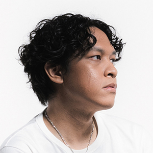

Hindia merupakan proyek solo dari Baskara Putra, seorang musisi, pencipta lagu, dan produser asal Jakarta yang dikenal lewat lirik-liriknya yang jujur, tajam, dan sangat dekat dengan realitas generasi muda. Memulai debut solonya lewat album Menari dengan Bayangan pada tahun 2019, Hindia berhasil mencuri perhatian penikmat musik tanah air lewat balutan musik pop alternatif dan indie-rock yang segar. Karya-karyanya sering kali meraba tema-tema sensitif namun nyata—mulai dari krisis kedewasaan (quarter-life crisis), kesehatan mental, hingga kritik sosial—menjadikannya salah satu narator visual paling berpengaruh di kancah musik indie modern Indonesia.
Memasuki era album kedua, Lagipula Hidup akan Berakhir (2023), Hindia semakin mengukuhkan posisinya dengan eksplorasi musikal yang lebih berani dan aransemen yang kompleks. Di atas panggung, penampilannya selalu berhasil membangun koneksi emosional yang kuat dengan pendengar, mengubah setiap konser menjadi ruang katarsis bersama. Dengan jutaan pendengar setia di berbagai platform digital, Hindia bukan sekadar proyek musik sampingan, melainkan sebuah refleksi jujur tentang bagaimana merayakan kerapuhan dan bertahan di tengah bisingnya dunia modern.
Spotify Followers
Monthly Listener
Official Full Albums